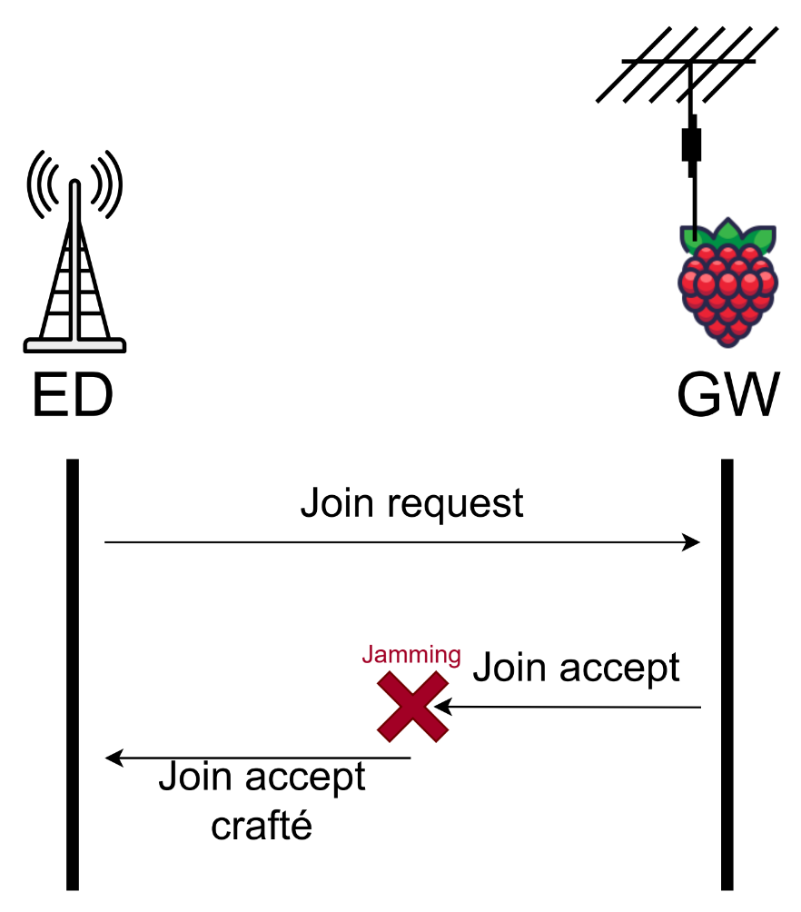

Scénario¶
Objectif¶
Réaliser une attaque par usurpation de passerelle via :
Un jamming sélectif des paquets Join Accept légitimes
L’injection d’un faux Join Accept avec clés contrôlées
Besoin manquant¶
Utiliser le jamming déjà mis en place et l’améliorer pour en faire un outil de jamming sélectif permettant de brouiller un type de paquet en particulier.
Déroulement¶
{kind=link}
1. Phase initiale¶
Le device envoie un Join Request normal contenant : - DevEUI (identifiant du device) - DevNonce (valeur aléatoire)
La passerelle légitime répond par un Join Accept
2. Attaque¶
Jamming ciblé : Brouillage uniquement des paquets Join Accept légitimes
Crafting malveillant : Envoi d’un faux Join Accept crafté contenant :
Notre JoinNonce contrôlé
Notre NetID falsifié
Mécanisme Clés¶
Important
Contrairement à une idée répandue, les clés de session ne sont pas transmises directement dans le Join Accept.
Processus réel de dérivation¶
# Côté device (calcul automatique) :
NwkSKey = aes128_encrypt(AppKey, 0x01 | JoinNonce | NetID | DevNonce)
AppSKey = aes128_encrypt(AppKey, 0x02 | JoinNonce | NetID | DevNonce)
Implications pour l’attaque¶
Condition nécessaire :
Soit connaître l’AppKey originale (rendant l’attaque inutile)
Soit faire accepter une AppKey compromise au device
Scénario réaliste :
Exploiter un device configuré avec AppKey par défaut (ex: 111…111) ou une AppKey fuitée
Protections Contre-Mesures¶
OTAA sécurisé : - Utilisation d’AppKey complexes - Rotation périodique des clés racines
Détection : - Surveillance des anomalies de JoinNonce - Analyse des variations de RSSI (détection jamming)
Chiffrement : - Activation systématique de AES-128 (même en public network)
Avertissement
Cette attaque reste théorique contre des réseaux bien configurés. Son implémentation réelle nécessiterait :
Une faille préexistante dans la gestion des clés
Une erreur de configuration du device